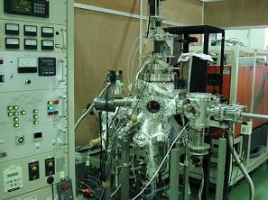
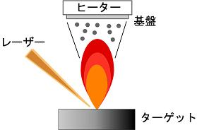
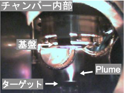

PLD 装置を用いた高温超伝導体の薄膜単結晶試料の作成
我々は、酸化物の作成に適したパルスレーザー堆積法 (Pulsed Laser Deposition : PLD) を用いて銅酸化物高温超伝導体の高品質薄膜単結晶試料の作成を行っている。パルスレーザー体積法は、ターゲット物質に高出力のレーザーを照射し、その時の蒸発を利用して基板上にターゲット物質を転写する手法である。以下にその利点を挙げる。パルスレーザー堆積法の利点
● 真空外からの照射するため、チャンバー内を酸素雰囲気にすることが可能である
● 一般的な蒸着法よりも制御するパラメータが少ない
(光の出力、パルス周波数、基盤温度、酸素分圧)
● ターゲットの組成比が基板上に転写される
● 基盤の格子定数を変えることで様々な特性をもつ薄膜が作製可能
PLD 装置で用いるレーザーは真空槽の外に設置し、真空外からでもテーゲット物質を蒸発させるためのエネルギーを加えられる。これにより、高いガス圧下での成膜が可能となるため、強い酸化雰囲気が必要な銅酸化物高温超伝導体や巨大磁気抵抗を示すマンガン酸化物を始めとする酸化物系の成膜に適している。蒸着時には、ターゲット物質の組成と作製した膜の組成のズレが少ないことも大きな利点である。我々は、広島大学放射光センターの準備棟に設置してある PLD 装置を用いて銅酸化物高温超伝導体 YBCO などの薄膜単結晶試料を作製し、in situ での光電子分光測定に向けて装置改良を行っている。

PLD 装置
PLD 装置
レーザー光源がチャンバーの外側に設置されているため、真空槽は非常にシンプルな構造となっている。 奥に見える赤い箱がレーザー光源である。以下に、銅酸化物高温超伝導体 YBa2Cu3O7 (YBCO) を PLD 法を用いて作製する過程を紹介する。
1、 Y : Ba : Cu = 1 : 2 : 3 の比で混ぜ合わせ焼成し、押し固めターゲット物質を作製する。
2、ターゲット物質を真空チャンバー内に導入し、チャンバー内を酸素雰囲気にする。
3、パルスレーザー光を照射する。
4、レーザー光とターゲット物質の相互作用でターゲット物質の温度が上昇し、励起蒸発種による発光が見られる。
5、蒸発柱 (Plume) が形成され表面から数原子層が飛散し、基盤に蒸着される。
